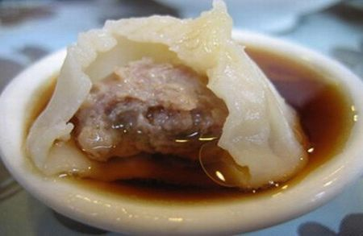
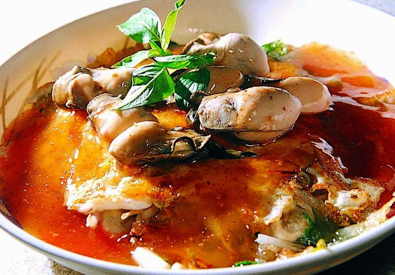
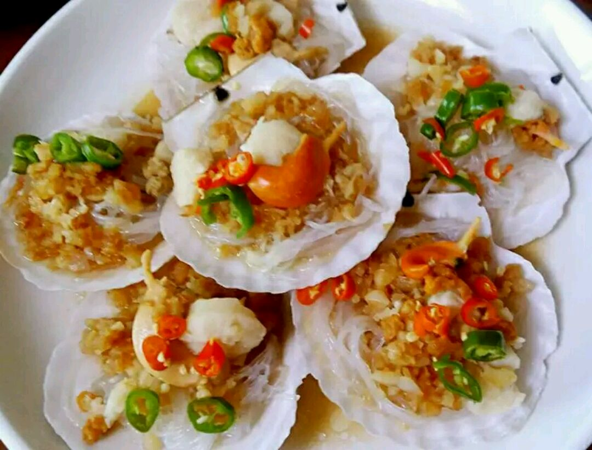

Heavy MEAL YUMMM YUMMMMM
This is a whatever menu for whatever and whenever!
Blast it:
-
Xiaolongbao known as Soup Dumplings is a type of steamed bun from the Jiangnan region of China, especially associated with Shanghai and Wuxi. It is traditionally prepared in xiaolong, small bamboo steaming baskets, which give them their name
 -
The Oyster Omelette is a dish that is widely known in Taiwan and Fujian, and many parts of Asia for its savory taste.
 -
ShuiZhuYu is a Chinese dish which originated from the cuisine of Sichuan province and the name literally means "water-cooked sliced fishes".
-
Steamed Scallops With Noodle Cantonese style steam fresh scallop with diced garlic and scallions on top of clear noodle.

Columns and Rows
| X | 1 | 2 | 3 | 4 | 5 | 6 | 7 | 8 | 9 |
| 1 | 1 | 2 | 3 | 4 | 5 | 6 | 7 | 8 | 9 |
| 2 | 2 | 4 | 6 | 8 | 10 | 12 | 14 | 16 | 18 |
| 3 | 3 | 6 | 9 | 12 | 15 | 18 | 21 | 24 | 27 |
| 4 | 4 | 8 | 12 | 16 | 20 | 24 | 28 | 32 | 36 |
| 5 | 5 | 10 | 15 | 20 | 25 | 30 | 35 | 40 | 45 |
| 6 | 6 | 12 | 18 | 24 | 30 | 36 | 42 | 48 | 54 |
| 7 | 7 | 14 | 21 | 28 | 35 | 42 | 49 | 54 | 63 |
| 8 | 8 | 16 | 24 | 32 | 40 | 48 | 56 | 64 | 72 |
| 9 | 9 | 18 | 27 | 36 | 45 | 54 | 63 | 72 | 81 |